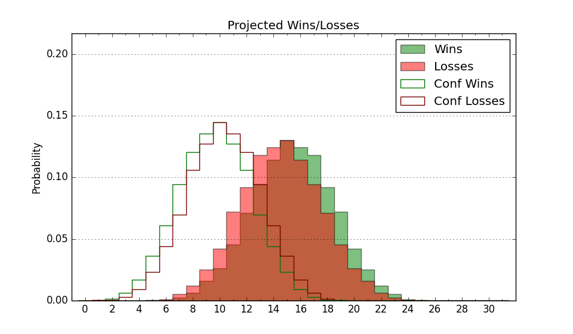

| Home | Game Probabilities | Conferences | Preseason Predictions | Odds Charts | NCAA Tournament |
| City: | Normal, Illinois | |
| Conference: | Missouri Valley (3rd)
| |
| Record: | 0-0 (Conf) 3-3 (Overall) | |
| Ratings: | Comp.: 0.1 (150th) Net: 2.7 (139th) Off: 107.8 (121st) Def: 105.1 (199th) SoR: 0.4 (184th) |
| Remaining | ||||||
|---|---|---|---|---|---|---|
| Date | Opponent | Win Prob | Pred. | |||
| 12/4 | @ Belmont (122) | 29.7% | L 72-78 | |||
| 12/7 | Pacific (284) | 85.1% | W 75-63 | |||
| 12/15 | Saint Louis (172) | 68.2% | W 78-72 | |||
| 12/18 | Northern Illinois (344) | 91.9% | W 78-62 | |||
| 12/22 | @ Cornell (146) | 34.1% | L 73-78 | |||
| 12/29 | Illinois Chicago (155) | 65.5% | W 75-70 | |||
| 1/2 | @ Murray St. (101) | 22.6% | L 65-73 | |||
| 1/5 | Southern Illinois (164) | 67.2% | W 72-67 | |||
| 1/8 | @ Evansville (231) | 51.0% | W 69-68 | |||
| 1/11 | Northern Iowa (129) | 61.1% | W 71-68 | |||
| 1/15 | @ Drake (91) | 18.9% | L 61-71 | |||
| 1/18 | Missouri St. (185) | 70.0% | W 70-64 | |||
| 1/21 | Indiana St. (220) | 76.5% | W 82-74 | |||
| 1/25 | @ Bradley (63) | 11.7% | L 65-78 | |||
| 1/29 | Belmont (122) | 59.0% | W 76-74 | |||
| 2/1 | Valparaiso (272) | 83.9% | W 78-67 | |||
| 2/5 | @ Illinois Chicago (155) | 35.8% | L 71-75 | |||
| 2/8 | @ Northern Iowa (129) | 31.6% | L 67-72 | |||
| 2/12 | Drake (91) | 44.2% | L 65-67 | |||
| 2/15 | @ Indiana St. (220) | 48.9% | L 77-78 | |||
| 2/19 | Bradley (63) | 31.1% | L 69-74 | |||
| 2/22 | @ Missouri St. (185) | 40.7% | L 66-68 | |||
| 2/25 | @ Southern Illinois (164) | 37.5% | L 67-71 | |||
| 3/2 | Evansville (231) | 78.0% | W 73-65 | |||
| Previous | Game Score | |||||
| Date | Opponent | Win Prob | Result | Off | Def | Net |
| 11/4 | Tennessee Martin (306) | 87.3% | L 65-67 | -27.7 | 8.5 | -19.2 |
| 11/7 | @North Dakota St. (180) | 40.0% | W 77-68 | 15.2 | 15.1 | 30.3 |
| 11/12 | Ohio (137) | 62.4% | W 85-75 | 22.5 | -12.0 | 10.5 |
| 11/22 | (N) McNeese St. (76) | 26.0% | L 68-76 | 8.7 | -12.8 | -4.1 |
| 11/23 | (N) UAB (171) | 53.5% | W 84-83 | 6.8 | -0.8 | 5.9 |
| 11/25 | (N) George Washington (140) | 47.6% | L 64-72 | -1.4 | -3.5 | -5.0 |
| Stats & Trends | |||||
|---|---|---|---|---|---|
| Current | Day | Week | Month | Season | |
| Composite | 0.1 | -0.8 | +0.6 | +2.6 | +2.6 |
| Comp Rank | 150 | -8 | +6 | +26 | +26 |
| Net Efficiency | 2.7 | -1.6 | +1.2 | -- | -- |
| Net Rank | 139 | -20 | +8 | -- | -- |
| Off Efficiency | 107.8 | -1.5 | -0.6 | -- | -- |
| Off Rank | 121 | -20 | -2 | -- | -- |
| Def Efficiency | 105.1 | -0.1 | +1.8 | -- | -- |
| Def Rank | 199 | -10 | +27 | -- | -- |
| SoS Rank | 195 | -21 | +18 | -- | -- |
| Exp. Wins | 15.4 | -0.4 | +0.2 | +1.9 | +1.9 |
| Exp. Conf Wins | 9.7 | -0.4 | +0.1 | +0.5 | +0.5 |
| Conf Champ Prob | 2.4 | -1.6 | -1.3 | -1.7 | -1.7 |

| Advanced Stats | ||
|---|---|---|
| Stat | Value | Rank |
| Off Eff FG % | 0.532 | 105 |
| Off Ast Ratio | 0.141 | 186 |
| Off ORB% | 0.185 | 349 |
| Off TO Rate | 0.139 | 114 |
| Off FT Ratio | 0.381 | 99 |
| Def Eff FG % | 0.535 | 267 |
| Def Ast Ratio | 0.153 | 237 |
| Def ORB% | 0.206 | 16 |
| Def TO Rate | 0.141 | 221 |
| Def FT Ratio | 0.328 | 168 |